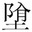
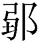
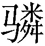
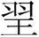
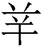

吴谷朗碑拓本一枚 ○·五○ 正月二日
李璧墓志并阴拓本二枚 一·五○
古志石华八册 二·○○ 正月四日
六朝墓志等七种十枚 五·○○
宕昌公晖福寺碑并阴二枚 六·○○
晋祠铭一枚 宋芷生寄来 正月六日
晋祠铭翻刻本一枚 同上
铁弥勒象颂一枚 同上
鄐君开褒余道记一枚 二·○○ 正月九日 次日还讫
鄐君开褒余道记一枚 一·五○ 正月十日
唐邕写经碑一枚 一·○○ 二十九日赠陈师曾以鼓山全拓中亦有之也
栖岩寺舍利塔碑一枚 一·○○
正议大夫宁碑一枚 ○·五○
山东金石保存所臧石拓本一百十九枚 一○·○○ 正月十二日
汉永和封墓刻石一纸跋一纸
汉梧台里社碑额并阴二纸跋一纸
汉建初残专一纸
汉画象十纸跋一纸
嘉祥画象十纸跋一纸
汉画象残石二纸
汉作虎函题刻一纸
梁陶迁造象并阴侧四纸
魏李璧墓志并阴二纸 三月十五日与二弟
魏李谋墓志一纸 同上
魏张道果造象三纸跋一纸
魏崔承宗造象一纸
魏鹿光熊造象一纸
齐世业寺造象二纸
隋开皇残造象二纸
唐天宝造老君象并阴侧四纸
唐李拟官造象一纸
周颜上人经幢八纸
石鼓旧本摹存一纸
说文统系图一纸
佛遗教经十纸 下午赠许季上
复刻法华寺碑十纸 已下五种于十五日付敦古谊出售
竹山连句十纸
岳侯送北伐诗一纸
陆继之摹禊帖一纸
朱氏集帖二十八纸
衡阳太守葛祚碑额一枚 ○·○三 正月十三日
杨叔恭残碑并阴侧三枚 一·五○ 正月十五日
河南存古阁臧石拓本全分卅种四十六枚 原卅二种四十九枚今除已有者二种三枚 四·○○
姚景郭度哲人等造象一枚 天统三年十月
王惠略等五十人造象一〔枚〕 武平五年七月
王亮等造象一枚 年月缺
邓州舍利塔下铭一枚 仁寿二年四月
寇遵考墓志并盖二枚 开皇三年十月
寇奉叔墓志并盖二枚 同前
张波墓志并盖二枚 大业三年十一月
羊□墓志一枚 大业六年九月
姜明墓志一枚 大业九年二月
张盈墓志并盖二枚 大业九年三月 已有未收
张盈妻萧墓志并盖二枚 同上
豆卢实墓志并盖二枚 大业九年十月 铭还
任轨墓志并盖二枚 仁寿四年二月
薄夫人墓志并盖二枚 贞观十五年五月
齐夫人墓志并盖二枚 贞观廿年五月
李护墓志并盖二枚 贞观廿年六月
张通墓志一枚 贞观廿二年七月
王宽墓志并盖二枚 永徽五年五月
王朗墓志并盖二枚 龙朔元年四月
竹氏墓志并盖二枚 龙朔元年九月
宋夫人墓志并盖二枚 龙朔三年二月
爨君墓志一枚 龙朔九年十月
袁弘毅墓志一枚 麟德元年十一月
王和墓志并盖二枚 乾封二年十月
张朗墓志一枚 乾封二年闰十二月
康磨伽墓志并盖二枚 永淳元年四月
康买墓志一枚 永淳元年十月
刘松墓志一枚 天圣二年十月
刘元超墓志并盖二枚 开元六年十一月
严氏墓志盖一枚
篆楷二体孝经残石一枚
未知名碑一枚
勃海太守张奢碑一枚 一·五○
兰陵王高肃碑并阴二枚 二·○○
王迁墓志一枚 ○·四○
响堂山造象刻经拓本六十四枚 一六·○○ 正月二十二日
晋刻太公吕望表一枚 ○·五○
东魏刻太公吕望表并阴二枚 一·○○
嵩山石人冠上马字拓本三枚 ○·○五 正月二十五日 即日分与师曾一枚
磁州所出墓志拓本六种六枚 祁伯冈赠 正月二十六日 廿九日寄越赠朱渭侠
维摩诘所说经一本 ○·一三二 正月二十八日
胜鬘经宋唐二译一本 ○·○九
弥勒菩萨三经一本 ○·○五四
净土经论十四种四本 ○·六二四
妙法莲华经三本 ○·四二
无量义观普贤行法二经一本 ○·○八○ 正月二十九日
衡方碑拓本一枚 二·○○
宋永贵墓志并盖二枚 ○·五○
张怦墓志并盖二枚 一·○○
校官碑一枚 一·○○ 正月三十日
祀三公山碑一枚 一·○○
竹叶碑一枚 一·五○
王基残碑一枚 四·○○
骠骑将军韩君墓碣一枚 ○·五○
高修寺颂一枚 一·○○
高造象碑一枚 一·○○
造龙华寺碑一枚 一·○○七一·五二○
磁州所出墓志拓片六枚 从许季上索来 二月八日 三月十五日与二弟
元祐墓志一枚 三·○○ 二月九日
元演墓志一枚 三·○○
穆胤墓志一枚 三·○○
寇文约修孔子庙碑一枚 一·○○
郭显邕造象一枚 ○·五○
维摩诘经残石三枚 一·五○
武定残碑一枚 ○·五○ 二月十二日
邑师道略三百人等造象一枚 ○·五○
李宪墓志一枚 一·○○
道俗百余人造象一枚 ○·五○ 二月十九日
王怜妻赵夫人墓志一枚 ○·五○
讳

墓志一枚 二·○○爨宝子碑一枚 一·○○ 二月二十日
兖州刺史残墓志一枚 ○·五○
文安县主墓志一枚 一·○○
隽脩罗碑并阴二枚 以高肃碑阳换来 二月二十七日

珍碑一枚无侧 一·五○二一·○○○元苌温泉颂一枚 一·○○ 三月五日
诸葛子恒平陈颂一枚 一·○○
洺州澧水石桥碑一枚 ○·五○
孔庙六朝唐宋碑拓本十四枚 四·○○ 三月十一日
宗圣侯孔羡碑一枚 黄初元年
鲁郡太守张猛龙清颂碑并阴二枚 正光三年
李仲璇修孔子庙碑一枚 兴和三年 阴侧有题名此阙
郑述祖夫子庙碑一枚 乾明元年
陈叔毅修孔子庙碑一枚 大业七年
孔颜赞残碑并阴二枚 开元十一年 阴政和六年 侧有孔昭薰题记此阙
兖公颂碑一枚 天宝元年 侧有宋人题名此阙
文宣王庙门记一枚 大历八年 有阴侧此阙
新修庙记一枚 咸通十 一年 侧有题名此阙
孔勖祖庙祝文一枚 天圣八年
祖庙祝文一枚 景祐二年
孔子手植桧赞一枚 无年月
宇文长碑一枚 ○·八○
于府君义桥石像碑并阴侧四枚 一·○○
龙藏寺碑并阴侧三枚 一·二○
建安公构尼寺铭［碑］一枚 一·○○
汪刻廿一家集中零本五种五册 五·四○ 三月十二日
五代史平话二册 三·六○
曲阜孔庙汉碑拓本十三［二］种十九枚 三·○○
鲁孝王刻石并题记二枚
乙瑛碑一枚
谒庙残碑一枚
孔谦碣一枚
孔君碣一枚
礼器碑并阴侧共四枚
孔宙碑并阴二枚
史晨前碑一枚后碑一枚
孔彪碑并阴二枚
熹平残碑一枚
孔褒碑一枚
汝南周君碑并题记二枚
赵芬残碑二枚 一·○○
造正解寺残碑四枚 一·○○
嵩高灵庙碑并阴二枚 一·五○ 三月十九日
嵩阳寺碑一枚 ○·五○
安喜公李使君碑一枚 一·五○
造交龙像残碑一枚 ○·五○
李琮墓志并侧一枚 ○·五○
法懃禅师塔铭一枚 ○·五○
寇奉叔墓志一枚 ○·五○
谭棻墓志一枚 一·五○ 三月二十二日
杜乾绪造象一枚 ○·五○
麃孝禹碑一枚 四·○○ 三月二十五日
济宁州学汉碑拓本一分共十七枚 四·○○
永建食堂画象一枚
北海相景君铭并阴二枚
郎中郑固碑一枚残石一枚
司隶校尉鲁峻碑并阴二枚
执金吾丞武荣碑一枚
尉氏令郑季宣碑并阴二枚两侧近人题刻二枚
朱君长题名一枚
孔子见老子画象一枚
胶东令王君庙门碑一枚
庐江太守范式碑并阴二枚
鲁王墓前二石人题字二枚 ○·五○ 四○·五○○
张迁碑并阴二枚 一·○○ 四月一日
刘曜残碑一枚 ○·五○
韩仁铭一枚 一·○○ 四月二日
尹宙铭一枚 一·五○
受禅表一枚 ○·八○
孙夫人碑一枚 ○·八○
根法师碑一枚 ○·四○
洛州乡城老人佛碑一枚 ○·五○ 四月四日
王善来墓志一枚 一·五○
苏慈墓志一枚 一·五［○］○ 四月八日
勃海太守张奢碑一枚 ○·八○ 四月十三日
邹县焦城堡画像六枚 三·○○
济宁李家楼画象一枚 ○·二○
姚贵昉臧石拓片十二枚 四·○○
鞠彦云墓志并阴拓本二枚 一·五○
诸葛子恒平陈颂碑阴一枚 一·○○
淳于俭墓志一枚 一·○○
杜文庆造象一枚 ○·二○
莱子侯刻石一枚 ○·三○
神州大观第九集一册 一·六○ 四月十五日
安阳新出墓志拓片七枚 一○·○○ 四月十四日
嵩山三阙十一枚 二·○○ 四月二十三日
张角残碑一枚 一·○○
黄石厓造象五种四枚 二·○○
曹子建碑一枚 一·○○
元氏法义卅五人造象一枚 一·○○ 四月二十四日
仲思那造桥碑一枚 一·○○
造交龙象碑残石一枚 ○·六○ 四月二十六日
杂造象等拓本四枚 ○·四○
隶韵六册 三·五○ 四月二十九日
石墙村刻石一枚 ○·五○
居摄坟坛刻石二枚 ○·五○
王偃墓志并阴二枚 一·○○
杂造像记八枚 二·○○四八·六○○
刘曜残碑一枚 一·○○ 五月六日
汉画象三枚 二·○○
登百峰山诗一枚 二·○○
黄石厓魏造象六种五枚 二·○○
驼山唐造象百二十枚 四·○○
仰天山宋造象十七枚 一·○○
吹角坝摩厓一枚 二·○○ 五月七日
朱鲔石室画象十五枚 四·○○
杂汉画象四枚 一·○○
杂六朝造象十六枚 三·○○
杂六朝造象四种七枚 二·○○ 五月十日
鞠彦云墓志并盖二枚 三·○○ 审为复刻次日还讫 五月十三日
源磨耶圹志一枚 二·○○
徂徕山摩崖七枚 二分共五·○○ 五月十五日赠师曾一分
开皇年王俱造四面象四枚 二·○○
杨显叔造象一枚 添入
郛休碑并阴二枚 三·○○ 五月十四日
淳于俭墓志一枚 一·五○
始建县界碑二枚 ○·五○
李业杨发贾夜宇阙共三枚 二·○○
冯焕阙一枚 一·○○
司马长元石门题字二枚 一·○○
魏三体石经残字一枚 三·○○
安阳残碑四种六枚 三·○○ 五月二十日
武班碑并阴二枚 ○·六○
天监井阑题字一枚 ○·六○
安喜公李君碑一枚 一·五○
高进臣买坟地券一枚 ○·三○
封龙山颂一枚 一·○○ 五月二十一日
李孟初神祠碑一枚 二·○○
旧拓姜纂造象一枚 一·五○
武荣碑一枚 六·○○ 五月二十八日
帅僧达造象一枚 ○·五○
旧拓曹真碑并阴二枚 一○·○○ 五月三十一日
萧梁石刻拓本一分十六枚 一六·○○
建陵阙二枚 萧秀东碑额一枚 萧秀西碑额一枚 萧秀西碑阴一枚 萧秀西阙一枚 萧憺碑额一枚 萧憺碑一枚 萧宏阙二枚 萧绩阙二枚 萧正立阙二枚 萧景西阙一枚 萧暎西阙一枚 次日审出萧宏东阙重出一枚西阙缺一枚 七九·○○○
华山王元鸷墓志一枚 二·○○ 六月三日
元鸷妃公孙氏墓志一枚 一·○○
汉中石刻十二枚 六·○○ 六月十日
高湛墓志一枚 二·○○
暴永墓志并盖二枚 二·○○ 六月十六日
皇甫

墓志一枚 一·○○ 六月二十二日杂造象三种三枚 二·○○ 六月二十四日 一六·○○○
仓龙庚午残碑一枚 一·○○ 七月一日
嵩高灵庙碑并阴侧三枚 二·五○
白实造中兴寺碑一枚 ○·五○
栖岩寺舍利塔碑一枚 一·○○
一百人造象一枚 ○·六○
明范上造象一枚 ○·四○
萧宏西阙一枚 ○·八○ 七月五日
菀贵造象一枚 ○·二○
作虎函题刻一枚 ○·五○ 七月十一日
汉画象一枚 ○·五○
首山舍利塔碑并阴大小四枚 一·五○
王偃墓志并盖二枚 一·○○
杂造象七枚 三·○○
杂古专拓片十枚 ○·五○
尔雅音图三册 三·○○ 七月十三日
汉隶字原六册 三·○○
淄州朋

画象二枚 ○·五○ 七月十六日大云寺碑拓一分十枚 一·五○
艺风堂读书记二册 ○·九○ 七月二十一日
古泉丛话一册 ○·五○
恒农冢墓遗文一册 二·三○
汉晋石刻墨景一册 二·三○
杂汉画象二枚 乙·○○ 七月二十五日
贾思伯碑并阴三枚 一·○○
刘怀民墓志一枚 五·○○
匋斋藏石拓本七十五种八十五枚 二五·五○ 七月廿八日
张景略墓志一枚 ○·五○
沈君阙侧画象二枚 一·○○ 七月卅日六二·○○○
群臣上寿刻石一枚 一·○○ 八月四日
沈君左右阙二枚 二·○○
析里桥郙阁颂一枚 二·○○
杂造象五种五枚 一·○○
端氏所藏造象卅二种卅五枚 七·○○ 八月八日
郝夫人墓志并盖二枚 一·○○ 八月十日
匋斋臧石小品拓片二十二种二十五枚 六·○○ 八月十二日
匋斋臧专拓片十一枚 一·○○
杂造象十一种十二枚 一·○○ 八月十九日
白佛山造象题名大小卅二枚 四·○○ 八月二十日
山右金石记十册 宋芷生寄来 三·○○ 八月二十七日
东洲草堂金石跋 三·○○ 八月三十一日三二·○○○
中国名画集第十八乙册 一·五○ 九月二日
薛 姬及公孙兴造象各一枚 一·○○ 九月六日
姬及公孙兴造象各一枚 一·○○ 九月六日
荧阳郑公摩厓诸刻卅一种卅三枚 一五·○○ 九月八日
白驹谷题刻二枚 一·○○ 九月九日
北齐造象二种二枚 一·○○
司隶从□残碑一枚 一·○○ 九月十日
王遗女墓志一枚 一·○○ 九月十六日
元倪墓志一枚 二·五○ 九月十八日
叔孙固墓志一枚 二·五○
穆子岩墓志一枚 二·五○
吴

造象四枚 ○·五○王法现造象等三种三枚 一·八○ 九月廿三日
云峰山题刻另种二枚 ○·四○
师旷墓画象四枚 ○·八○
晋赵府君墓道二枚 一·五○ 九月廿七日
崔君墓志一枚 一·○○
六朝造象二种二枚 一·○○ 九月廿八日
廉富造象四枚 一·○○ 九月卅日
吕升欢造象二枚 一·○○
天保造象二种二枚 ○·四○
造象残石二枚 ○·三○
胡陇东王神道一枚 ○·三○
□显墓志一枚 ○·六○
王曜墓志并盖二枚 ○·八○
崔暹墓志一枚 ○·六○三九·○○○
神州大观弟十集一册 一·五○ 十月十日
晋太公吕望表并阴二枚 ○·五○
廉富造象碑阴并侧三枚 ○·五○
王显墓志一枚 一·○○ 十月十四日
羊定墓志一枚 一·○○
天柱山东堪石室铭一枚 一·五○ 十月十五日
白云堂中解易老也一枚 ○·二○
岁在壬申建一枚 ○·三○
修邓太尉祠碑并阴二枚 二·五○
圣母寺造象四枚 一·五○
金石苑六册 壹一·○○ 十月十九日
陆希道墓志盖一枚 一·○○ 十月二十二日
杂造象三种五枚 一·五○
毗上残石一枚 ○·五○
端氏臧石拓本二十七种三十三枚 八·○○ 十月二十九日
三二·五○○
仙人唐公房碑并阴二枚 二·○○ 十一月八日
仲思那造桥碑一枚 ○·五○ 十一月十二日
章仇禹生造象并阴二枚 一·○○
杂造象五枚 ○·五○
端氏臧石小品四种四枚 一·○○
受禅表一枚 一·五○ 十一月十九日
公卿将军上尊号奏二枚 一·五○
补本马鸣寺碑一枚 一·○○
河南未知名汉残碑一枚 一·○○ 十一月二十四日
讳彻墓志一枚 一·○○
元买得墓志并盖二枚 一·○○
端氏石拓片三种四枚 一·○○
安阳残石四种五枚 四·○○ 十一月二十六日
足拓禅国山碑一枚 四·○○
恭川李恭残石一枚 ○·五○
六十人造象一枚 一·○○
隋佛经残石一枚 一·○○
隋段怀穆造塔残石一枚 一·○○
杂造象四种四枚 ○·五○
襄阳张氏墓志十种十六枚 一·○○
杂魏齐造象三枚 ○·三○ 十一月三十日
隋造象一枚 ○·一○
王磐虎造象一枚 震古斋贻
文殊般若碑侧一枚 同上 二六·四○○
风雨楼臧吉金拓片十二枚 三·六○ 十二月五日
唐人写经石印本一册 ○·五○
涵芬楼秘笈第一集八册 二·六○
艺术丛编第一至第三集三册 八·四○
汉刘熊残碑阴并侧拓本二枚 一·四○
高昌壁画精华一册 六·五○
山海经二册 二·○○ 十二月八日
中州金石记二册 ○·六○
汉书西域传补注一册 ○·四○ 二八·○○○
总计四九六·五二○
[1] 整理《寰〔宇〕贞石图》 因《寰宇贞石图》一书搜录的石刻拓片未严格按时间顺序编排，不同版本颇有出入，目录亦时有改刻，故鲁迅重予整理。1915年7月1日“借《寰宇贞石图》六本”，8月3日购“《寰宇贞石图》散叶一分五十七枚”，随即据该书整理出拓片二三一种，贴成五册，写有总目及说明，各册又列有碑石名称、年代、地点的详目。编讫作《〈寰宇贞石图〉整理后记》，现编入《古籍序跋集》。
[2] 茶话会并摄景 教育总长张一麐邀集全体部员举行茶话会表示贺年，并征询此后教育应取之方针。
[3] 山东金石保存所 山东省立的文物保护机构。在济南大明湖畔山东省图书馆内。建于1909年（清宣统元年）。收藏金石、书画、碑帖、古籍等一万七千余件，并有常设陈列。
[4] 参观医学专门学校 教育部直接管辖的北京专门以上学校有八所，其中包括北京大学和北京医学专门学校等。是日鲁迅代表教育部前往视察并报告教育现状。
[5] 鼓山 在福建福州市东郊，山中有始建于唐代建中四年（783）的涌泉寺及多处古迹名胜。下文的緟出，同重出。
[6] 图书分馆开馆 该馆由前青厂西口永光寺街迁至宣武门外香炉营四条胡同，是日举行开馆茶会，3月1日正式接待读者。
[7] 写《法显传》起 《法显传》，述东晋高僧法显等赴中印度寻求经律事迹。鲁迅于3月16日抄讫。
[8] 专门学校成绩展览会 指全国专门以上学校成绩展览会，1915年8月开始筹备，主要由专门教育司负责，次年2月18日鲁迅被任为干事。3月15日展览会在教育部礼堂开幕，4月15日结束。参加展出的学校共六十八所。
[10] 此处“秋祭”应为“春祭”。参看本卷第28页注〔11〕。
[11] 移入补树书屋 鲁迅在绍兴县馆初住东部藤花馆西屋，1912年11月28日迁至藤花馆南向小舍，自此又移居县馆西部补树书屋，直至1919年11月。
[12] 指国立北京高等师范学校。该校前身为京师大学堂师范馆，1908年独立，称京师优级师范学堂。1912年改名北京高等师范学校，1923年7月改组为国立北京师范大学，1928年11月起称国立北平大学第一师范学院，1929年8月独立为北平师范大学。鲁迅自1920年8月至1926年8月在该校兼任讲师；1929、1932年两次北上探亲时都应邀讲演。
[13] 《〈蜕龛印存〉序》 《蜕龛印存》，绍兴杜泽卿（别号蜕龛）所作的篆刻印谱集。此“序”由周作人起草，鲁迅改定后于6月21日寄回。
[14] 指吊祭袁世凯。本年6月6日袁世凯死，国务院公布丧事条款：自殓奠后一日起至释服日止，在京文武各机关除公祭外，按日轮班前往行礼。又按奠祭事项规定，入祭者需着大礼服，因此十四日日记有“向虞叔昭借衣”事。
[15] 莫友芝（1811—1871） 字子偲，号郘亭，贵州独山人，清代学者。道光举人，咸丰间曾为曾国藩幕，力荐李鸿章任职。
[17] 端氏 指端方（1861—1911），字午桥，号匋斋，满洲正白旗人，清末大臣。曾任两江总督、直隶总督等职。精于金石学，收藏甚富。死后所藏金石拓本等流散。鲁迅先后于本年起至1919年共购得其藏石拓片及瓦当等拓本九百三十枚。
[18] 武英殿 在故宫西华门内，初为皇帝斋戒和召见大臣之殿，李自成入京时在此登基，后为多尔衮办公地；清康熙起为宫廷校刊典籍之所，所刊刻书籍世称“殿本”。
[19] 兴业银行 即浙江兴业银行。1906年4月创办于杭州，北京等地设有分行。鲁迅同乡友人蒋抑卮为该行董事，鲁迅很多银钱事务均由该行办理。
[20] 实业之日本社 日本杂志社。1897年大日本实业学会成员光冈威一郎创办《实业之日本》月刊。该社还出有《妇人世界》杂志等。
[21] 中券三、交券七 中券、交券指中国银行、交通银行发行的钞票。袁世凯政府因国库空虚，1916年5月下令这两种钞票停止兑现，造成贬值，只能按六或七折使用，因交券略高于中券，故流通时需按比例搭配。这里所说“中券三、交券七”即二者在工资中各占三成和七成。
[22] 祭日休息 本日为日本的“新尝祭”，故日本邮局休息。
[23] 俟堂 鲁迅笔名。曾于《俟堂专文杂集》等书、文中使用。
[24] 指鲁迅因母亲六十寿辰回绍省亲。本日启程，次年1月7日返京，前后三十六天。
[26] 指亲友来贺鲁迅母寿。鲁母生日为夏历十一月十九日（阳历12月13日），旧俗寿辰前一天先设宴“暖寿”，故是日午后即有客至。
[28] “隔壁戏” 口技的一种。演员一人在帐幔内，模拟各种声音，表演简单的情节。
[29] “平湖调” 又作“平调”，绍兴地方的一种说唱。一般由五人演出，一人司三弦并说唱，其他四人分别以胡琴、琵琶、扬琴、洞箫伴奏。